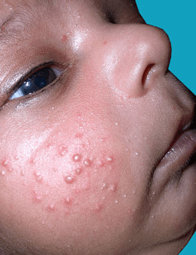
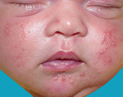

What is Baby Acne?
Babies can develop blemishes on their face that looks exactly like acne commonly
seen in teens. Although the cause of baby acne is unknown, it may be the result
of maternal or infant hormones (androgens) stimulating glands in the face to
produce oil, or sebum. Baby acne can essentially be divided into 2 groups:
neonatal acne, which affects babies in their first month of life; and
infantile acne, which typically affects babies 3 to 16 months of age.
Neonatal acne that is confined to the face is called benign cephalic
pustulosis, while infantile acne is usually more severe than neonatal
acne and consists of more lesions. The later form may last a few weeks
to a few months, but most cases usually resolve by age 3.

Neonatal acne occurs in about 20% of newborns. Infantile acne appears
to be less common. Males tend to be more affected than females, although
this reason is unknown.

Baby acne consists of multiple red, raised pimples and pus-filled bumps, commonly
found on the baby's face, neck or trunk. Skin can have blackheads and
whiteheads present as well. Pitting and scarring of the affected areas
can occur in approximately 10 to 15% of affected infants.
It's not clear exactly what causes baby acne.
Baby acne can usually be diagnosed on sight. No specific testing is needed.
In mild cases of baby acne, using a daily cleanser is usually the first step
in treatment. Gentle, fragrance-free cleansers are best and should be applied
to the affected area daily. Newborns and infants have very sensitive skin, so
vigorous scrubbing should be avoided.
In general, baby acne is harmless and does not require urgent care. If you
have any questions or feel that the acne on your baby's skin is worsening
despite using daily cleansing with a gentle soap, it is best to see your
pediatrician. Additionally, if your baby is prone to scratching or picking
at these lesions, there is a risk the affected areas could develop a
bacterial skin infection, and it is best to seek further medical care.
In mild cases, prescription therapy is generally unnecessary, and the lesions
may resolve with gentle cleansing of the skin. The first-line treatment most
physicians prescribe is 2.5% benzoyl peroxide. This is an gel that is applied
to the skin; it is a commonly used acne product. It is generally well tolerated
but may cause dryness. The next line of therapy, in severe cases, is to add an
oral antibiotic. Most infants are able to stop oral antibiotics within 18 months.
Rarely, cases of acne could be made worse by a fungus, which would require a
topical antifungal applied to the skin for treatment. Your baby's pediatrician
may request the help of a pediatric dermatologist for severe cases of acne.
Furthermore, in severe cases or those resistant to therapy, an investigation
for an underlying hormonal (endocrine) disorder may be warranted.
These tips are useful for caring for your baby's skin while he or she has acne:
- Keep your baby's face clean.Wash your baby's face daily with warm water and mild baby soap.
- Dry your baby's face gently.Simply pat your baby's skin dry.
- Don't pinch or scrub the acne.You may cause more irritation or an infection.
- Avoid using lotions or oilson your baby's face.